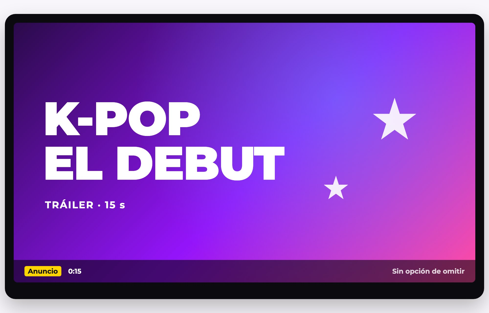
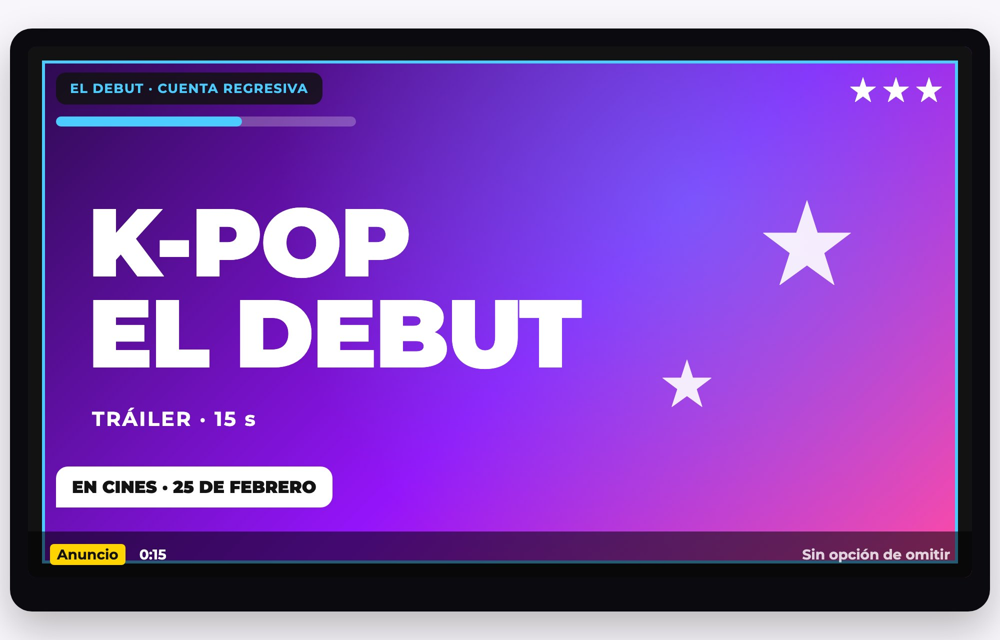
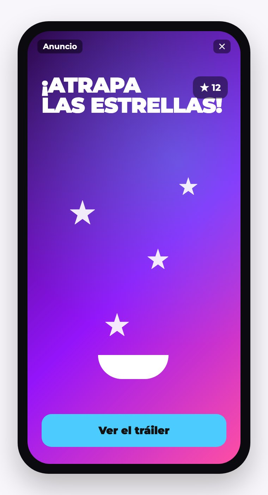
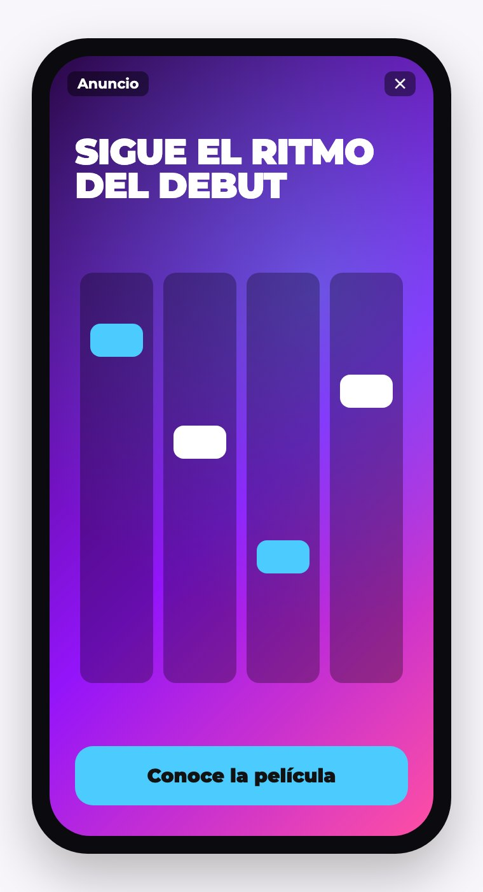
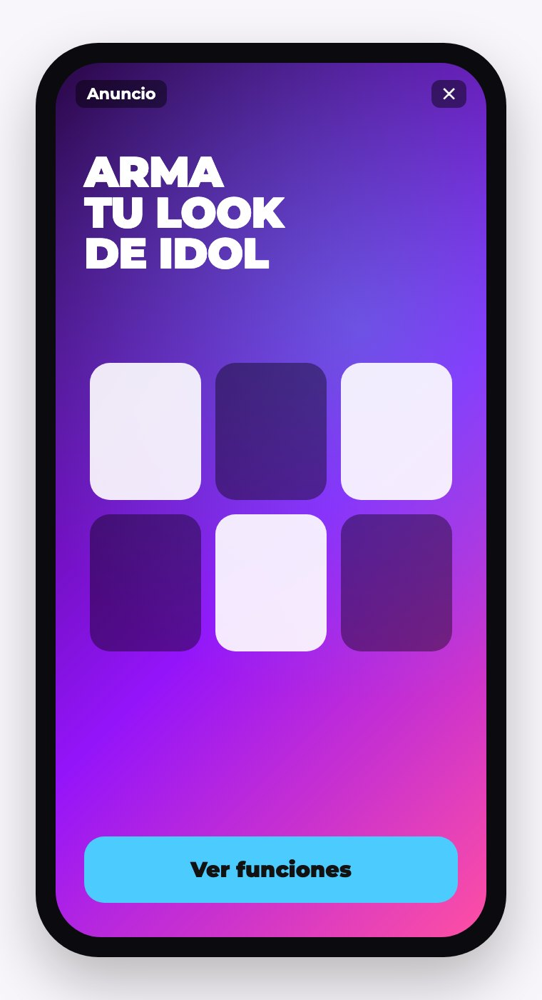
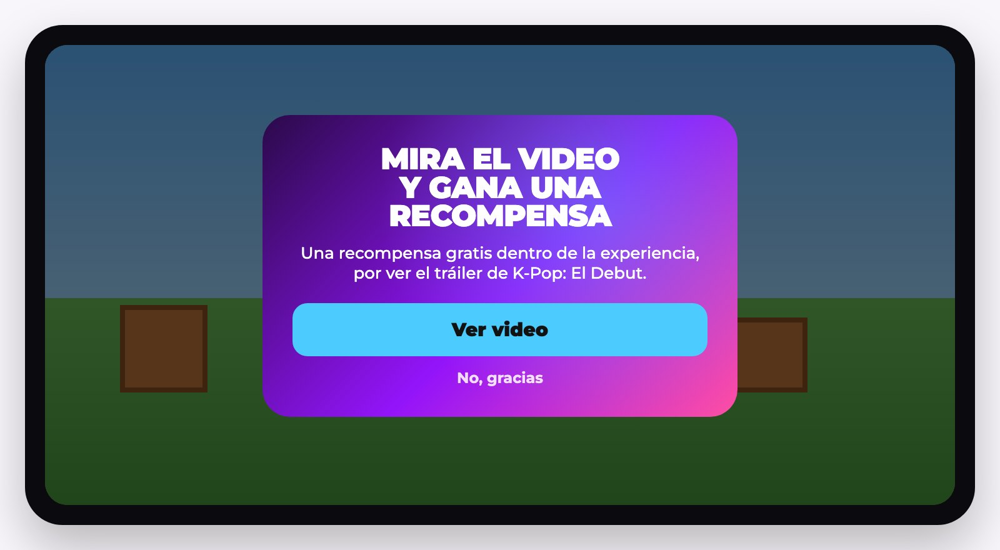

★
El K-pop ya está en su playlist. Llevémoslo al cine.
Fuente: U18 Radar · Argentina · 10-17 años · panel Kids LATAM · música (n=255) y plataformas (n=255). Respuesta múltiple: los porcentajes no se suman.
Fuente: U18 Radar · Argentina · 10-17 años · panel Kids LATAM · «¿Qué plataformas usas?» (n=255). Respuesta múltiple.
Fuente: U18 Radar · Argentina · 10-17 años · panel Kids LATAM · «¿Qué aplicaciones usas en tu teléfono o tableta?» (n=255). Respuesta múltiple.
Fuente: U18 Radar · Argentina · 10-17 años · panel Kids LATAM · «¿Qué tipos de música escuchas habitualmente?» (n=255). Respuesta múltiple.
Fuente: U18 Radar · Argentina · 13-17 años · panel Kids LATAM · «Tipos de películas, programas o series que les gusta ver» (n=140). Respuesta múltiple; se muestran 5 géneros.
Fuente: U18 Radar · Argentina · 10-17 años · panel Family (responden los padres) · «Influencia del hijo/a en la decisión de compra», visitas al cine (n=247)
Fuente: U18 Radar · Argentina · 10-17 años · panel Kids LATAM · «¿Recibe dinero de bolsillo / le compran cosas?» · acumulado 2024 · base acotada (n=36)
El target principal son los preadolescentes; los adolescentes y los padres, que compran la entrada, son el alcance secundario. El brief destaca un sesgo femenino.
Estreno: 25 de febrero de 2027 (Paramount). El período surge del brief; la distribución por tramos es una propuesta de Kidscorp.
Fuente: U18 DSP · Campaign Planner · estimado, preview del 19/11/2026. Audiencia del planner: 10 a 18 años, Argentina (6,0 M). Alcance estimado, no es garantía de entrega.


Non-Skippable: hasta 15 s · compra CPM · KPIs: impresiones y views · CTV, mobile y desktop. Video Skin: capa de marca sobre el MP4 del tráiler, sin rodaje ni reedición. Los KPIs son hipótesis y se validan con un test A/B (video limpio contra video con skin). En contenido infantil el clic está restringido: el KPI es la view completa.



Escenario B · Apps, 12 a 17 años.

Todas las piezas son maquetas ilustrativas, sin el key art ni el tráiler de Paramount: las piezas finales se producen con los assets aprobados.
B suma Apps, que llega a los de 12 años que Roblox deja fuera, y más del doble de alcance. Impresiones = inversión ÷ costo unitario. Costos: benchmark del DSP, Q1, ARS (YouTube) y CPM de campañas recientes de Roblox Rewarded en Argentina.
Con 2,5 veces la inversión, el alcance sube casi 2,5 veces: el escenario B suma Apps, que llega a los de 12 años que Roblox deja fuera.
Fuente: U18 DSP · Campaign Planner · estimado, preview del 19/11/2026. Audiencia del planner: 10 a 18 años, Argentina (6,0 M). Alcance estimado, no es garantía de entrega. Frecuencia estimada en YouTube: 1,06 (A) y 1,11 (B). Alcance con 3+ exposiciones: 0,0% (A) y 0,2% (B). El Roblox no tiene alcance en el planner.
Franco · franco@kidscorp.digital · kidscorp.digital